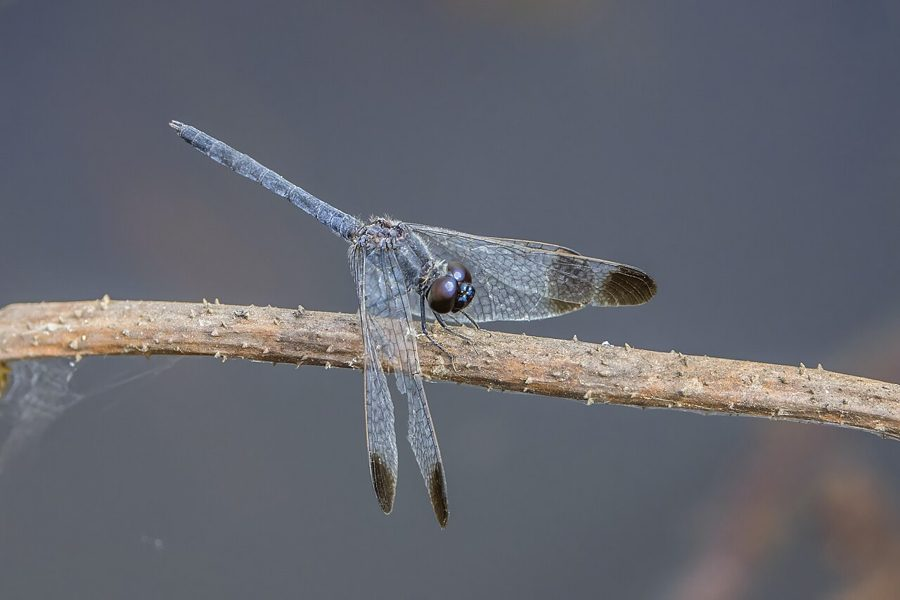

ब्लैक-टिप्ड ग्राउंड स्किमरBlack-tipped Ground Skimmer
Diplacodes nebulosa · Libellulidae · INS-0152

- Scientific name वैज्ञानिक नाम
- Diplacodes nebulosa (Fabricius, 1798)
- Family कुल
- Libellulidae
- Hindi हिंदी
- ब्लैक-टिप्ड ग्राउंड स्किमर
- Local names स्थानीय नाम
- black-tipped ground skimmer, black tipped ground skimmer, skimmer
- Status here यहाँ की स्थिति
- native
- Movement आवागमन
- Resident, here all year
- Known from कहाँ दर्ज
- Others have published records from the wider Awadh–Purvanchal plain, none yet from Basti–Ayodhya अवध–पूर्वांचल से दूसरों के प्रकाशित अभिलेख, बस्ती–अयोध्या से अभी नहीं
- IUCN IUCN
- not evaluated
- Review समीक्षा
- audited and independently read
When to look कब देखें
Present all year. साल भर मौजूद।
Tell it apart from इनसे अलग पहचानें
ब्लैक-टिप्ड ग्राउंड स्किमर / Black-tipped Ground Skimmer
Diplacodes nebulosa (Fabricius, 1798) — Libellulidae
ब्लैक-टिप्ड ग्राउंड स्किमर — हमारे खेतों, बागों और घास वाली ज़मीनों पर बहुत आम देखी जाने वाली एक छोटी व्याधपतंग है। इसका शरीर पीला, नारंगी या लाल हो सकता है, पर इसकी सबसे खास निशानी है कि इसके पंखों की छनियों पर काले धब्बे हैं। यह जमीन या घास के कम से कम होकर उड़ती है, कभी भी ज़्यादा ऊँचा नहीं उड़ती। यह पतंगों, मक्खियों और छोटे कीड़ों को हवा में पकड़ती है। गर्मी के मौसम में इसकी तादाद सबसे ज़्यादा होती है।
Quick Identification त्वरित पहचान
| Feature | Description |
|---|---|
| Size | Small; body length 22–26 mm; wingspan 35–45 mm |
| Male Colour | Yellow-orange to orange-red; wing tips and pterostigma (wing spot) blackish |
| Female Colour | Pale yellow-orange; similar wing markings to males |
| Wings | Transparent with black tips on forewings; black pterostigma |
| Behaviour | Flies low over grass and ground; frequently returns to same perch; never rises far above grass level |
Field tip: A small, low-flying dragonfly of open grasslands and fields. Males and females are yellow-orange with distinctly black-tipped wings. Watch for them skimming just above grass, returning repeatedly to low grass stems and small twigs.
हिंदी — कैसे पहचानें: छोटी, पीली-नारंगी व्याधपतंग। पंखों की नोक काली। जमीन के बिल्कुल पास उड़ती है।
Morphology आकारिकी
Biometrics (typical measurements for northern Indian plains):
| Measurement | Range |
|---|---|
| Body length | 22–26 mm |
| Hindwing length | 16–20 mm |
| Wing span | 35–45 mm |
Adult description: Small, compact libellulid. The male has a bright yellow-orange or orange-red thorax and abdomen, with a thin black dorsal line along the abdomen. The head is orange with large compound eyes. Wings are transparent with a characteristic black or dusky tip on each forewing and a black pterostigma (triangular spot at the wing leading edge). The female is similarly colored, though sometimes paler. Both sexes have a relatively short, stocky body adapted to low-altitude flight over vegetation.
Vocalisations
Odonates do not produce true vocalisations.
- Sound production: Wing-whirring sounds during territorial encounters and courtship are produced at approximately 30–35 Hz.
Behaviour & Ecology व्यवहार और पारिस्थितिकी
Diplacodes nebulosa is a specialist of low-altitude habitats, particularly grasslands, field edges, and areas with short vegetation. Unlike many dragonflies that patrol over water or rise high in the air, this species is almost always found just above grass level, rarely more than a meter above the ground. Males are territorial, returning repeatedly to the same low perch such as a grass stem or small rock.
The species is a generalist insectivore, capturing small flying insects including flies, small moths, midges, and parasitic wasps. It hunts by making short, rapid sallies from its perch and returning immediately.
Breeding occurs over water at the margins of ponds, tanks, and streams, as long as grassy vegetation is nearby. The species shows peak abundance during the warm season (April–November) and is present year-round in suitable habitats across the Indian subcontinent.
Larval (Naiad) Stage
The naiad is aquatic, compact, and highly predatory:
- Body form: Stout, compact, brown or greenish-brown, reaching 10–13 mm body length.
- Habitat: Lives in soft mud and among aquatic plants at pond or stream margins.
- Duration: Development typically takes 4–6 weeks under warm conditions.
- Emergence: Naiads climb onto emergent vegetation to emerge, with peak emergence during monsoon and early post-monsoon.
Life Cycle / Phenology जीवन चक्र
| Stage / Season | Event |
|---|---|
| Egg | Laid by female into water or on wet mud; sticky, sinking |
| Naiad (instar 1–9) | Aquatic; predatory on small invertebrates |
| Naiad duration | 4–6 weeks in warm season |
| Emergence | Peak July–October; individuals emerge at dusk and night |
| Adult lifespan | 3–4 weeks |
| Breeding season | May–November; peak August–October |
हिंदी: गर्मी में पैदा होते हैं। अंडे 4–6 हफ़्तों में बड़े होते हैं। सबसे ज़्यादा तादाद गर्मी और बारिश के बाद।
Host Plants or Prey आहार
Prey (adults):
- Small flies and mosquitoes
- Tiny moths and butterflies
- Leafhoppers and small flying insects
- Parasitic wasps and gnats
Prey (larvae):
- Mosquito larvae and pupae
- Small aquatic crustaceans
- Midge larvae (Chironomidae)
- Small aquatic insect nymphs
Predators / Natural Enemies शत्रु
- Birds: Insectivorous birds including drongos, warblers, and bee-eaters.
- Amphibians: Frogs and toads in wetland habitats.
- Insects: Larger dragonflies; aquatic water bugs prey on naiads.
- Spiders: Hunting spiders on grass and low vegetation.
Agricultural / Human Relevance कृषि प्रासंगिकता
Pest suppression. This dragonfly is beneficial in agricultural regions where it hunts small crop pests including leaf folders, stem borers, and mosquitoes. Its preference for low-altitude habitats and proximity to vegetation makes it particularly effective in controlling insects at crop level.
Today. Common in all grassland and open-field habitats; abundant wherever grass and open areas adjoin water bodies.
Expected Locally स्थानीय रूप से अपेक्षित
Not a field record. Written from published accounts for eastern Uttar Pradesh. No confirmed local sighting yet — if you have seen it, that is what the atlas needs.
अभी तक स्थानीय पुष्टि नहीं। यह विवरण प्रकाशित स्रोतों से है, किसी अवलोकन से नहीं।
Expected in open grasslands, field margins, and grassy areas adjoining ponds and stream banks throughout Basti district and eastern Uttar Pradesh. This species is present year-round but most abundant from April to November. Males are highly visible, skimming just above grass and repeatedly returning to low perches. The first local record would be a photograph with place and date.
Distribution वितरण
Global range: Widespread across Africa, southern Europe, the Middle East, and Asia. Particularly abundant in the Indian subcontinent and Southeast Asia.
In India: Distributed throughout the country from lowlands to moderate elevations in all states where grassland habitats exist.
In Uttar Pradesh: Common state-wide in all grassland and field-margin habitats.
In Basti district / eastern UP: Expected in all open grasslands, field margins, and grassy areas adjoining water bodies.
Research Questions शोध प्रश्न
Anyone can investigate these | कोई भी इन प्रश्नों की जाँच कर सकता है
- How many times per minute does a territorial male return to its perch while hunting? / एक नर कितनी बार अपनी जगह पर वापस आता है? — Observe and count returns over a 10-minute period.
- Does this species prefer grasslands with short grass vs. tall grass? — Count individuals in areas with different grass heights.
- What is the average distance traveled from the perch during a hunting sally? / शिकार के लिए कितनी दूर जाता है? — Estimate distance of sallies; record successful captures.
- How does abundance change with proximity to water sources? — Count at different distances from nearest water.
- Which prey items are most frequently captured during peak hunting hours? — Collect samples of gut contents or observe captures.
Similar Species मिलती-जुलती प्रजातियाँ
| Species | How to tell apart | हिंदी | |
|---|---|---|---|
| [[ground_skimmer\ | Ground Skimmer]] (Diplacodes trivialis) | Very similar; lacks clear black wing tips; wing spots less prominent | जमीनी व्याधपतंग — पंखों पर काले धब्बे कम स्पष्ट |
| [[fulvous_forest_skimmer\ | Fulvous Forest Skimmer]] (Neurothemis fulvia) | Larger; darker coloration; frequents forested areas near water | सुनहरी वन व्याधपतंग — बड़ी, गहरा रंग |
| [[scarlet_skimmer\ | Scarlet Skimmer]] (Crocothemis servilia) | Larger; bright red (males); broader abdomen; more robust | सिंदूरी व्याधपतंग — लाल, बड़ी |
Field rule: A small, yellow-orange dragonfly with black-tipped wings, flying just above grass level in open grasslands, and repeatedly returning to the same low perch, is the Black-tipped Ground Skimmer.
Taxonomy & Classification वर्गीकरण
Original description. Described by Johan Christian Fabricius in 1798 in Supplementum Entomologiae Systematicae. Type locality is India. The genus Diplacodes was erected by Kirby to accommodate small, ground-dwelling libellulids; the specific epithet nebulosa is Latin for "cloudy," referring to the cloudy wing markings.
Subspecies. Monotypic — no subspecies are currently recognised.
Family and order placement. Order Odonata, family Libellulidae. A specialized member of the family adapted to low-altitude grassland habitats.
Phylogenetic notes. Diplacodes nebulosa is closely related to Diplacodes trivialis and other Old World ground skimmers, forming a monophyletic group within the genus.
IUCN status rationale. Listed as Least Concern (LC). Abundant and adaptable across its range, with stable populations wherever grassland habitats exist.
Photo Gallery फोटो गैलरी
No photos yet — add field photos to media/species/black_tipped_ground_skimmer/ and run node scripts/sync_photos.js.
Wanted:
- Male at low perch on grass stem
- Male in flight over grassland
- Female at rest
- Wing detail showing black tips
References संदर्भ
- Fabricius, J.C. (1798). Supplementum Entomologiae Systematicae. Proft and Storch, Copenhagen. [original description]
- Fraser, F.C. (1936). The Fauna of British India, including Ceylon and Burma. Odonata. Vol. 3. Taylor and Francis, London.
- Prasad, M. & Varshney, R.K. (1995). A checklist of the Odonata of India. Oriental Insects, 29(1): 385–428.
- Mitra, T.R. (2002). Geographical distribution of Odonata (Insecta) of Eastern India. Zoological Survey of India, Kolkata.
- Subramanian, K.A. (2005). Dragonflies and Damselflies of Peninsular India: A Photographic Guide. Vigyan Prasar and ATREE, Bangalore.
- IUCN SSC Odonata Specialist Group. (2024). Diplacodes nebulosa. IUCN Red List of Threatened Species. Ver. 2024.
- GBIF Occurrence Data — Diplacodes nebulosa, Asia (2010–2025). GBIF taxon key: 1427963.
Source file: species/fauna/insects/black_tipped_ground_skimmer.md